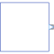

ComplexSignalSourceBase class for continuous signal source |

|
Information
This information is part of the Modelica Standard Library maintained by the Modelica Association.
Basic block for Complex sources. This component has one continuous Complex output signal y and two parameters (offset, startTime) to shift the generated signal.
Parameters (2)
Connectors (1)
| y |
Type: ComplexOutput Description: Connector of Complex output signal |
|---|
Components (1)
| offset |
Type: Complex Description: Offset of output signal y |
|---|
Extended by (1)
|
Modelica.ComplexBlocks.Sources
Generate step signal of type Complex |